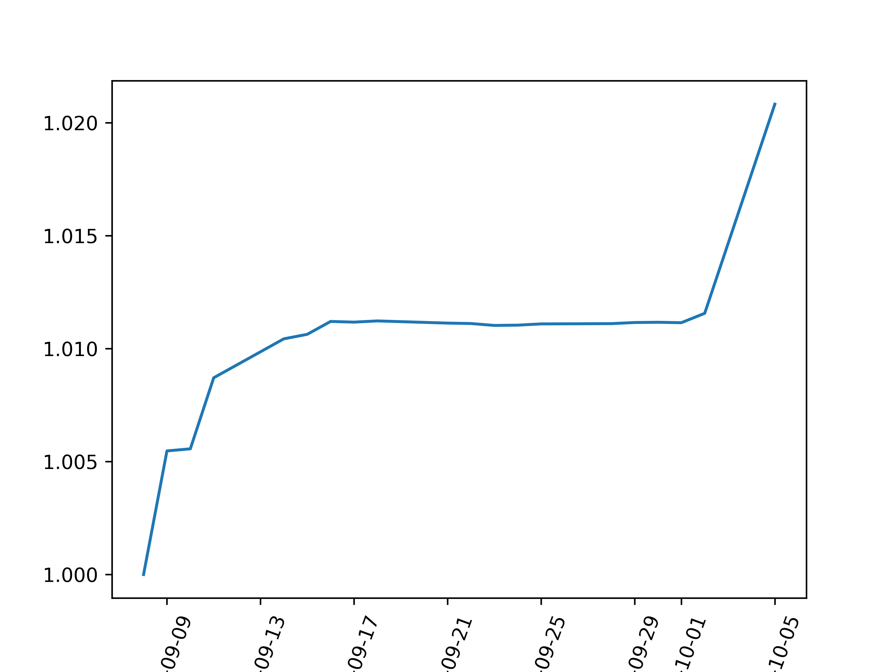

Developing a performance monitoring system for my algorithmic trading system
It’s one thing to backtest your signals and forecasts on historical data but it’s a completely different animal in terms of execution. I have written about this here.
Another important component of setting up an algorithmic trading system is performance monitoring. Some important questions I had in mind while developing this component,
- How do I measure my slippage? Commissions paid?
- What are my daily returns? And how do I measure performance of my strategy while accounting for inflow and outflow of cash into the account?
How do I measure my slippage?
On this front, I use FlexReport function (using REST API) from ib_insync to query the trades made on that day. The function will query the XML report from Interactive Brokers which I subsequently format for daily reporting purposes. The queryId specification had to be set up via IB web account management system. Unfortunately this expires annually which means you have to find a way to remind yourself to refresh this queryId manually every year.
## Code for querying from IB
report = FlexReport(token, queryId)
Some trivial code is then written to format the XML into this format below for my email notification,
What are my daily returns? How do I measure performance of my strategy while accounting for inflow and outflow of cash into the account?
In the past, I de-prioritised and placed development of performance monitoring at the bottom of my backlog as I could easily query sophiscated performance figures from IB. You may find some of the figures in my blog here.
Increasingly, however, I found that it is important to understand the performance drivers of portfolio performance by instruments and strategies. To analyze at this granular level, I would have to capture the daily/ hourly levels and returns of instruments and strategies.
To do that, the system triggers a request to take an accounting snapshot of the portfolio every hour,
But what if there is inflow and outflow of cash - you may ask? I simply rely on Time Weighted Return Formula.
- TWR = [(1+HP1) X….(1+HPN)] - 1
- where TWR = Time weighted return
- n = Number of sub-periods
- HP = (End Value of Day- Initial Value of Day + Cash Flow)/ (Initial Value + Cashflow)
- HPN = Return for sub period n
At the portfolio level, the inflow and outflow would the net cash inflow into the account. At the instrument level, the inflow and outflow would be the net buy/sell trades on that day. You would also have to adjust the instrument asset value to ‘the equity value’ by downsizing through the overall portfolio leverage factor.
You may find the implementation of measuring time weighted returns at overall portfolio level in the appendix.
After all that is mentioned and done, what could I do? I could plot some fancy equity curves as shown below,

I could also measure realized rolling volatility and do crazy stuff (but unimportant in my opinion) like fama-french 3, 5, or gazillion factors analysis.
What is in my backlog for further enhancement of performance monitoring?
- Understanding performance drivers systematically with data captured i.e. break down overall portfolio returns into weighted performance drivers by strategies, instruments and time-frame.
- Pushing data files into a relational or non-relational database. But as much as possible, I will try to limit interaction between the trading system and databases during trading hours. In the past, I observed concurrency issues while using SQLite and database server ‘hanging’ while using relational database such as Mysql. Another alternative would be to host the servers in the cloud. But that would mean I have to pay for extra costs and worry about connectivity issues. Sometimes plain old files could just work?
- Impact of exchange rate effect on portfolio performance. I wrote and created a repository on this in the past. You may visit the link here for more information.